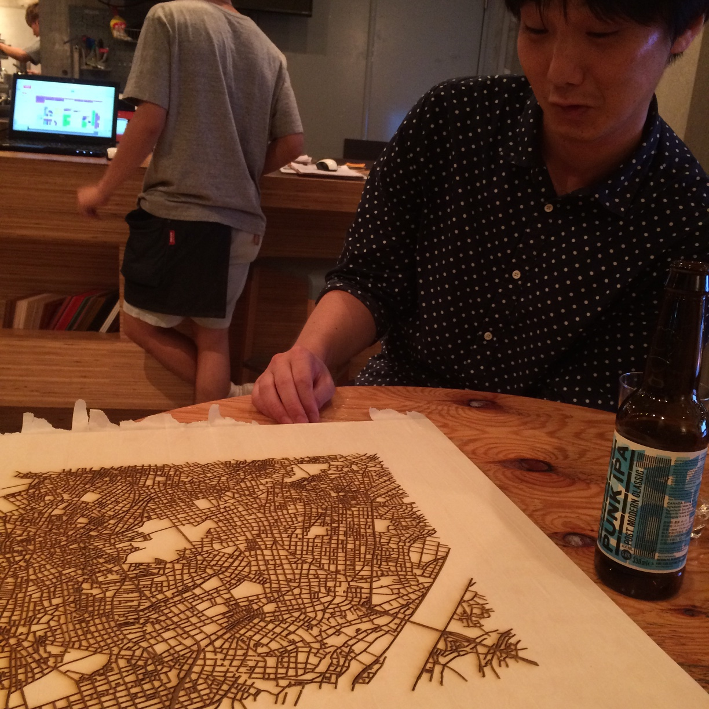

Our project name is ‘Mable’. Mable is a coined word combined ‘Map’ and ‘Table’.
What will we do?
We will create a table with OpenStreetMap data and was inspired ‘Woodcut Data Visualization’. A top board of Mable is cut with a laser cutter by street vector data. We make this data as Scalable Vector Graphics (SVG) using just D3 and use SVG Crowbar. Because it will be able to open the file in Adobe Illustrator for a laser cutter.

Where will we go?
We will run toward creating the production line for Mable and sharing various local community including OSM mappers. Then people can drink, eat, talk and discuss on table that was lined streets of your city.
In addition, we would like to display a graphic animation with a projection mapping. It may be art combined real lines and virtual lines.
What kind of technology is used?
- OpenStreetMap’s overpass API (GeoJSON)
- D3.js
- SVG Crowbar
- Laser cutter
- CSS3 animation